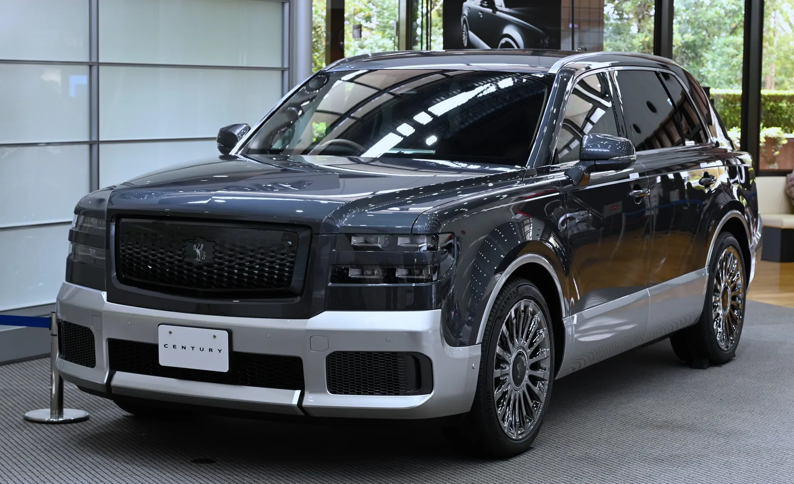
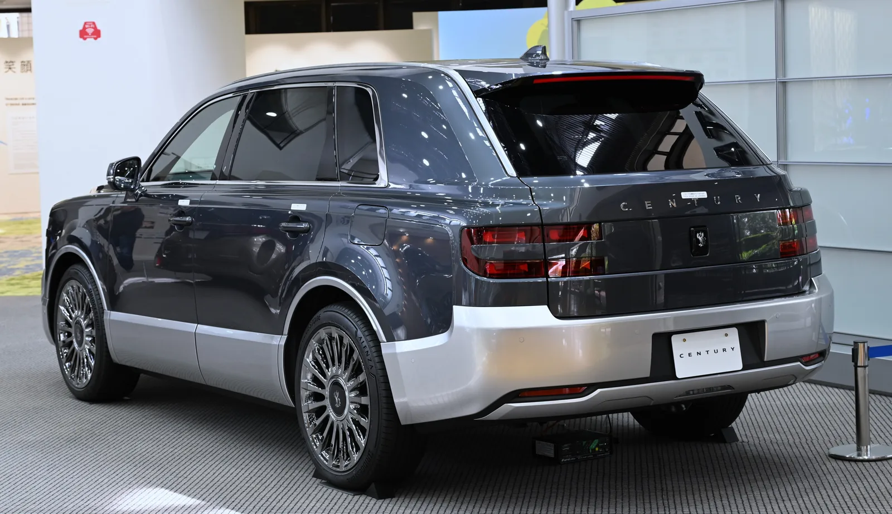
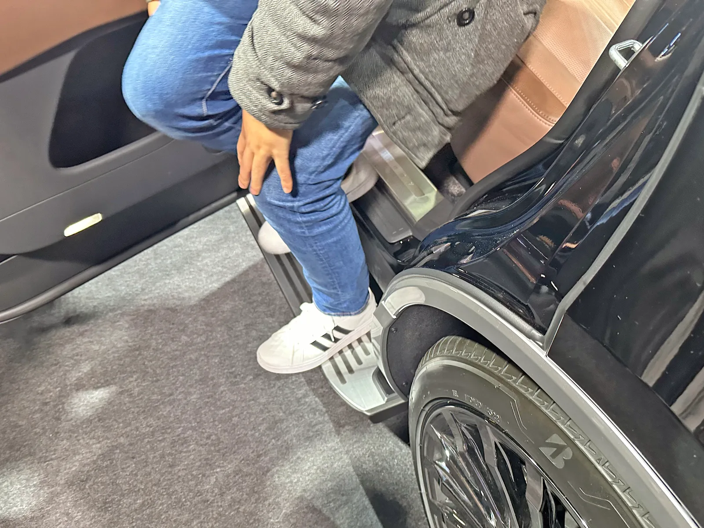
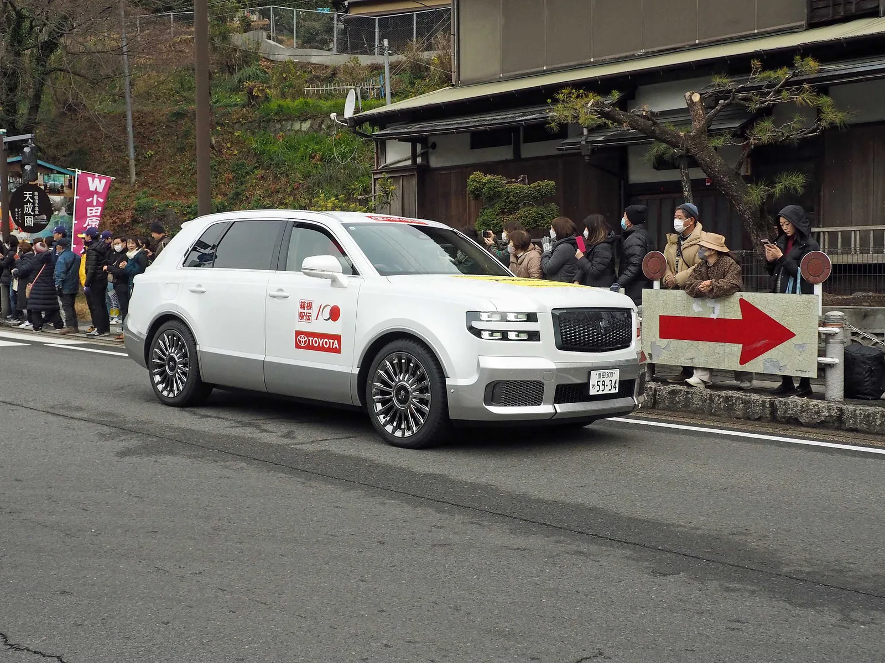

▲ 1967년부터 이어진 토요타 최상급 브랜드 '센추리'의 SUV 버전 ⓒ Wikimedia Commons
1. 60년 가까이 이어진 '일본산 롤스로이스'
토요타 센추리는 1967년, 창업자 도요다 사키치의 탄생 100주년을 기념해 등장했다. 이름부터 '100년(Century)'에서 따왔다. 처음부터 일본 황실과 정부 고위 인사, 재계 총수를 위한 의전차로 만들어졌고, 이후 반세기가 넘도록 역대 총리와 대기업 오너들의 상징적인 차로 자리 잡았다.
2023년, 토요타는 이 상징성을 앞세워 센추리를 별도의 초고급 브랜드로 독립시키고 그 첫 확장 모델로 센추리 SUV를 공개했다. 세단 한 종류뿐이던 센추리 라인업에 사상 처음 등장한 SUV형 모델로, 재팬 모빌리티쇼(옛 도쿄모터쇼)와 오사카 모빌리티쇼 등에서 공개될 때마다 '일본의 롤스로이스 컬리넌'이라는 별명이 따라붙었다.
일본 총리 관용차의 계보를 보면 센추리의 위상이 더 뚜렷해진다. 1967년 첫 세대 출시 이후 지금까지 센추리는 총리 관용차 자리를 지켜왔고, 2007~2008년 후쿠다 야스오 내각 때부터는 연비·친환경성을 이유로 렉서스 LS600hL 하이브리드가 병행 투입되기도 했다. 이번에 교체된 세단형 관용차는 2020년 아베 신조 내각 시절 도입된 차량으로, 약 6년간 사용되며 노후화된 상태였다.

▲ 후면부에는 'CENTURY' 레터링과 세로형 테일램프가 자리한다 ⓒ Wikimedia Commons
2. 뒷좌석에 모든 걸 쏟아부은 특수 사양
센추리 SUV는 철저히 '뒷좌석 승객'을 위해 설계됐다. 차체 크기는 전장 5,205mm, 전폭 1,990mm, 전고 1,805mm, 휠베이스 2,950mm로 대형 SUV급이다.
| 항목 | 수치 |
|---|---|
| 전장 x 전폭 x 전고 | 5,205 x 1,990 x 1,805mm |
| 휠베이스 | 2,950mm |
| 파워트레인 | 3.5L V6 가솔린 + 후륜 전기모터 PHEV |
| 시스템 출력 | 412마력 |
| 변속기 | CVT + E-Four 사륜구동 |
| EV 모드 주행거리 | 최대 69km |

▲ 도쿄 인근 토요타 전시장에 전시된 센추리 SUV. 그릴 위 봉황 엠블럼이 최상급 브랜드임을 알린다 ⓒ Wikimedia Commons
뒷좌석에는 풀 플랫 리클라이닝 시트와 통풍·열선, 마사지 기능이 들어가고, 회전식 수납 테이블과 2열 전용 냉장고, 앰비언트 조명, 2열 터치 디스플레이 컨트롤러까지 갖췄다. 승하차 편의를 위해 뒷문이 최대 75도까지 열리고, 차 문턱에는 전동식 발판이 자동으로 펼쳐진다. 짐칸과 객실 사이는 차음 접합유리로 분리해 정숙성을 높였다.

▲ 뒷좌석 승하차를 돕는 전동식 발판. 문은 최대 75도까지 열린다 ⓒ Wikimedia Commons
3. 가격은 2억 원대, 그런데 아무나 못 산다
센추리 SUV의 일본 내 시작 가격은 2,500만 엔으로, 2026년 9월 환율 기준 약 2억 2,600만 원에 달한다. 최근 다카이치 총리의 전용차로 새로 투입된 사양은 여기서 한층 더 올라간 2,700만 엔(약 2억 5,000만 원)부터 시작하는 것으로 알려졌다. 기존에 쓰던 센추리 세단(2020년 아베 신조 총리 재임 시절 도입)보다 승하차 편의성이 개선됐다는 게 교체 이유였다. 새 차량은 2026년 6월 22일부터 실제 운용에 들어갔으며, 다카이치 총리는 이날 새 관용차를 타고 중·참의원 예산위원회가 열리는 국회에 처음 출석했다. 다만 이 교체는 다카이치 총리 취임 이전부터 추진되던 사안으로, 총리 개인의 의향이 반영된 결정은 아니었던 것으로 전해진다.
📍 판매량 자체가 적다
센추리는 일본 내수 전용 모델로, 애초에 해외 판매 계획이 없다. 토요타는 브랜드 독립 이후에도 월 30대, 연 360대 수준의 소량 생산 기조를 유지하고 있어, 가격 이전에 '주문해도 오래 기다려야 하는 차'로 꼽힌다.
4. 원조 '센추리 로얄'과는 또 다른 차다
여기서 헷갈리기 쉬운 부분이 있다. 진짜 일왕이 타는 전용차는 '센추리 로얄'이라는 별도의 초특수 사양이다. 2006~2008년 궁내청(일본 왕실청)의 의뢰로 납품된 맞춤 제작 리무진으로, 당초 5대 제작이 계획됐으나 국가 재정 상황을 고려해 4대로 줄여 납품됐다. 5.0L V12 엔진을 얹고 일본 전통 종이(와시) 천장재, 원목·석재 마감을 적용했으며, 2006년 9월 임시국회 개회식부터 실제 사용에 들어갔다. 표준 사양 기준 대당 가격은 약 5,250만 엔(세금 포함, 약 5억 원 이상)에 달했던 것으로 전해진다.
반면 이번에 화제가 된 센추리 SUV는 어디까지나 일반 판매형 모델이다. 일왕 전용 리무진이 아니라 토요타 딜러망을 통해 일반 소비자(주로 기업 오너·고위 공직자)도 주문할 수 있는 양산차라는 점에서 태생부터 다르다. 다만 '센추리'라는 이름이 가진 의전차 상징성을 그대로 물려받았고, 실제로 총리 관용차로 채택되면서 그 격을 다시 한번 증명한 셈이다.

▲ 하코네 역전마라톤 본부 차량으로 투입된 센추리 SUV. 실제 의전·행사 차량으로도 쓰인다 ⓒ Wikimedia Commons
5. 제네시스 G90과 비교하면 '서민차' 소리가 나오는 이유
국내에서 이 기사가 화제가 된 건 제네시스 G90과의 가격 차이 때문이다. G90 롱휠베이스는 트림에 따라 9,748만 원부터 1억 6,769만 원 사이에서 팔린다. 최고 출력은 3.5L 트윈터보 가솔린 기준 415마력으로, 412마력의 센추리 SUV와 스펙상 큰 차이가 없다.
| 구분 | 토요타 센추리 SUV | 제네시스 G90 롱휠베이스 |
|---|---|---|
| 가격 | 약 2억 2,600만 원~ | 9,748만~1억 6,769만 원 |
| 파워트레인 | 3.5L V6 PHEV, 412마력 | 3.5L 트윈터보, 415마력 |
| 생산 방식 | 월 30대 소량 생산(주문 제작형) | 양산차 |
| 판매망 | 일본 내수 전용 | 글로벌 전국망 서비스 |
결국 두 차는 지향점이 다르다. G90은 합리적인 가격대에서 성능과 서비스망으로 승부하는 양산 플래그십이고, 센추리 SUV는 희소성과 상징성 자체가 상품인 주문 제작형 의전차다. 세계적으로도 미국 대통령 전용차 '비스트'(캐딜락 기반 특수제작), 영국 왕실의 롤스로이스, 독일 정부의 메르세데스-마이바흐처럼, 최상위 의전차는 대부분 판매량보다 상징성을 기준으로 만들어진다. 센추리 SUV 역시 그 계보 위에 있는 차라는 점에서, 단순히 '비싼 SUV' 이상의 의미를 갖는다.
오토트리뷴 원문 기사는 아래에서 확인 가능합니다. 오토트리뷴 원문 기사 바로가기